Designing Resource Sharing
Sharing Resources: Statistical Multiplexing
Links and switches on the Internet have finite capacity. One key design problem we need to solve is: How do we share these resources between different Internet users?
Let’s formalize the problem a bit more. Recall that a flow is a stream of packets exchanged between two end hosts (e.g. a video call between you and a friend). The Internet needs to support many simultaneous flows at the same time, despite limited capacity.
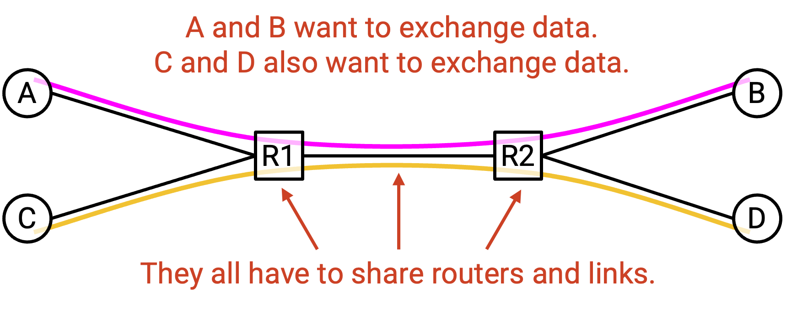
We often say that the network resources are statistically multiplexed, which means that we’ll dynamically allocate resources to users based on their demand, instead of partitioning a fixed share of resources to users.
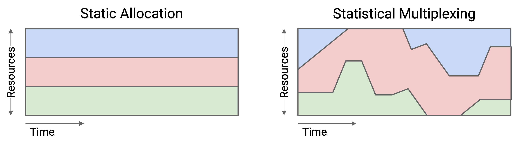
As an analogy, consider your personal computer. It’s not the case that your computer preemptively allocates half its CPU to Firefox, and half its CPU to Zoom, and only allows each application to use its half of the CPU. Instead, your computer dynamically allocates resources to different applications depending on their needs.
Statistical multiplexing is now everywhere in computer science. For example, in cloud computing, different companies might dynamically share resources in a datacenter.
Statistical multiplexing is a great way to efficiently share network resources, because user demand changes over time. You probably aren’t using a constant 10 Mbps of bandwidth every second, 24 hours a day. You probably have more demand while you’re awake, and less while you’re sleeping.
The premise that makes statistical multiplexing work is: In practice, the peak of aggregate demand is much less than the aggregate of peak demands.
Let’s unpack what this means. Suppose we have two users, A and B. We can plot each user’s demand over time.
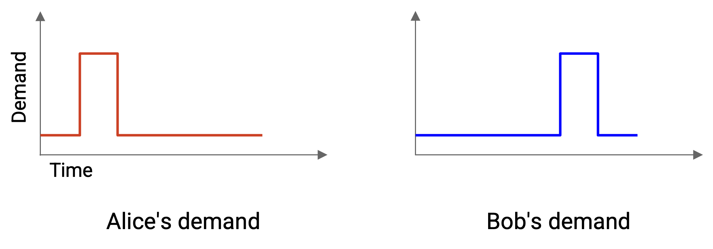
How much capacity do we need to allocate in order to fully meet both users’ demands?
The bad strategy (no statistical multiplexing) is to compute the aggregate of peak demands. We find A’s peak demand and B’s peak demand, and add them together.
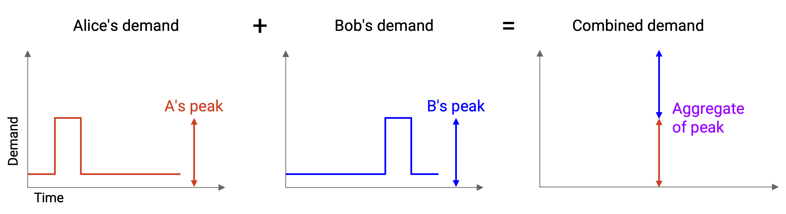
If we allocate this much capacity, we can definitely meet their demands. A’s peak demand is X, so we allocate X to A, and likewise, we allocate Y to B. However, this approach is wasteful, because A’s peak and B’s peak didn’t happen at the same time.
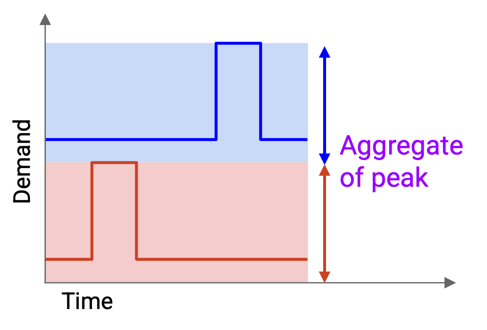
The better strategy (statistical multiplexing) is to first compute the aggregate demand by graphing their combined demand over time. For example, the 10am demand in the new graph is the A’s 10am demand, plus B’s 10am demand. Then, we compute the peak of the aggregate demand.
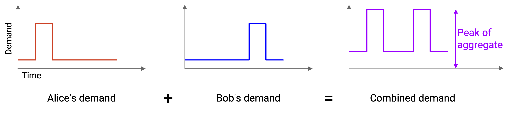
If we allocate this much capacity, we can no longer statically allocate a portion to each user. However, by dynamically changing the amount we allocate to each user over time, we can still successfully meet their demands, even while having less capacity.
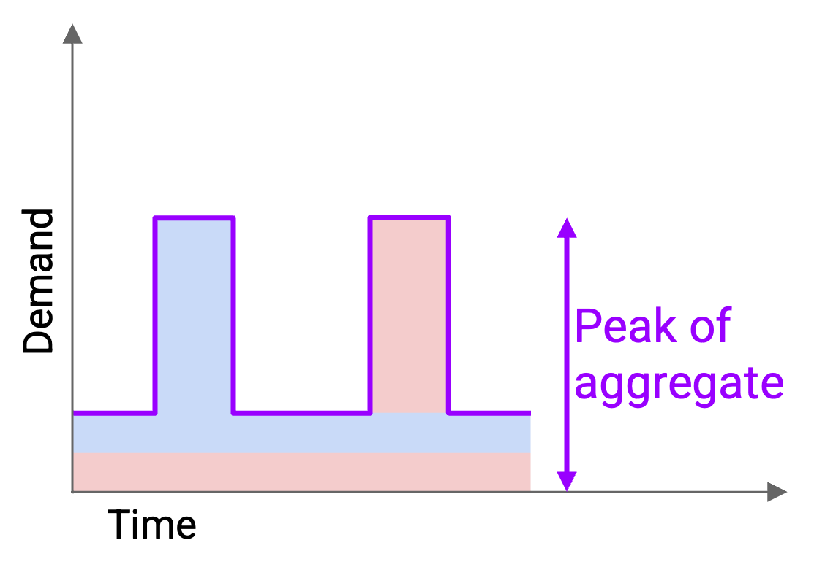
The statistical multiplexing approach allows us to support the same users with less capacity (cheaper for us, more efficient use of resources). For many distributions, we can show that the peak of the aggregate is actually closer to the sum of the average demands, which is much less than the sum of the peak demands.
In practice, in the network, we don’t provision for the absolute worst case, when everything peaks at the same time. Instead, we share resources dynamically and hope that peaks don’t occur at the same time. Peaks could still happen at the same time, which would cause packets to be delayed or dropped (recall the link queue). Nevertheless, we made the design choice to statistically multiplex and use resources more efficiently, while dealing with the consequences (occasional simultaneous peaks).
At the end of the day, statistical multiplexing is a design choice with trade-offs, and different users might make different choices. For example, financial exchanges sometimes decide to build their own dedicated networks to support peak demand, because they care more about ensuring network connectivity during peak periods, and they can afford the extra cost.
Sharing Resources: Circuit Switching vs. Packet Switching
We now know that we can use statistical multiplexing to decide how much capacity to build. Our next question is: How do we actually dynamically allocate resources between users?
As an analogy, consider a popular restaurant with many customers and a limited supply of tables. There are two ways we could imagine allocating tables to customers. We could have customers make reservations, or we could seat customers first-come first-serve.
The two approaches to sharing resources in the network are similar. One approach is best-effort. Everybody sends their data into the network, without making any reservations, and hopes for the best. There’s no guarantee that there will be enough bandwidth to meet your demand.
The canonical design for best-effort is called packet switching. The switch looks at each packet independently and forwards the packet closer to its destination. The switches don’t think about flows or reservations.
In addition to packets being independent from each other, the switches are also independent from each other. As a packet hops across switches, every switch considers the packet independently (the switches don’t coordinate).
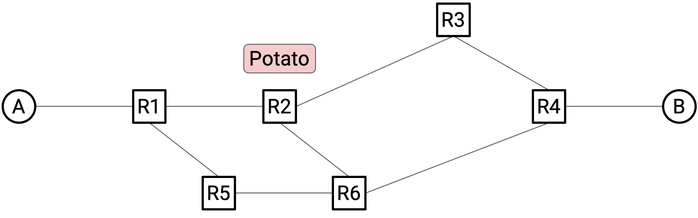
The other approach is based on reservations. At the start of a flow, users explicitly request and reserve the bandwidth they need. After the data is sent, the resources can be released for others to reserve.
The canonical design for reservations, explored in both research and industry, is called circuit switching.
At the start of a flow, the end hosts identify a path (sequence of switches and links) through the network, using some routing algorithm. (We haven’t discussed routing algorithms to find this path yet, so you can assume it happens by magic for now.)
Then, the source sends a special reservation request message to the destination. Along the way, every switch hears about this request as well. If every switch accepts the request, then the reservation is made, and a circuit of switches has been established between the source and destination.
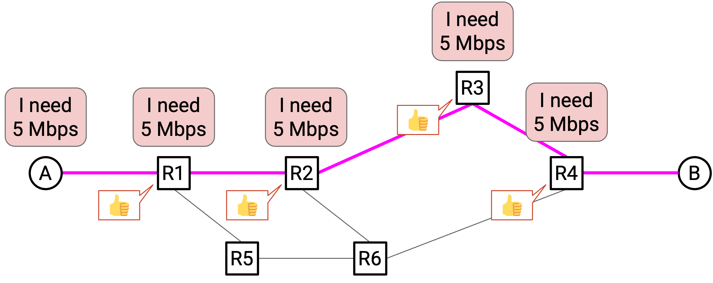
Once the reservation is confirmed by every switch, data can be sent. Eventually, when the flow ends, the source sends a teardown message to the recipient. Along the way, every switch sees this message and releases its capacity.
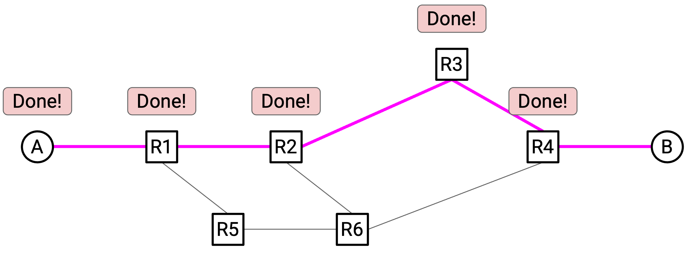
Note: We use the term circuit here because this idea came from the phone network, which uses this same idea to allow two people to call each other.
Remember, both circuit switching and packet switching are embodying statistical multiplexing. The main difference is the granularity at which we’re allocating resources: per-flow with reservations, or per-packet with best-effort. Even in circuit switching, we’re dynamically allocating resources based on reservations. We are not preemptively reserving for all flows that might ever exist.
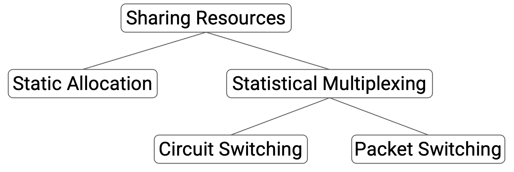
Circuit Switching vs. Packet Switching Trade-offs
We now have two approaches to sharing resources on the Internet. Which is better? It depends on the criteria we’re using to evaluate each approach.
There are four dimensions we can use to compare the two approaches.
- Is this a good abstraction (or API) for the network to offer to an application developer?
Circuit switching offers a more useful abstraction to developers, because there’s a guarantee of reserved bandwidth. This gives the developer more predictable and understandable behavior (assuming all goes well). As an analogy, consider reserving a machine in the cloud to run some task. It’s easier for the developer to reason about performance if they know the specs of the machine they’re getting. If the developer had no idea what machine they were using, the task could still run, but the performance is less predictable.
Circuit switching is also a useful abstraction if you’re a network operator who has to distribute resources to users. You know exactly how much bandwidth each user is requesting, and you can charge them the appropriate amount of money. It’s a little harder to implement an intuitive business model if there are no guarantees about what you’re offering to a client.
- Is the approach efficient at scale? Does the approach use all the available bandwidth on the network, or is some bandwidth wasted?
Packet switching is typically more efficient. Exactly how much better depends on the burstiness of the traffic sources.
If each sender sends data at a constant rate throughout time, then both circuit switching and packet switching makes full use of the capacity.
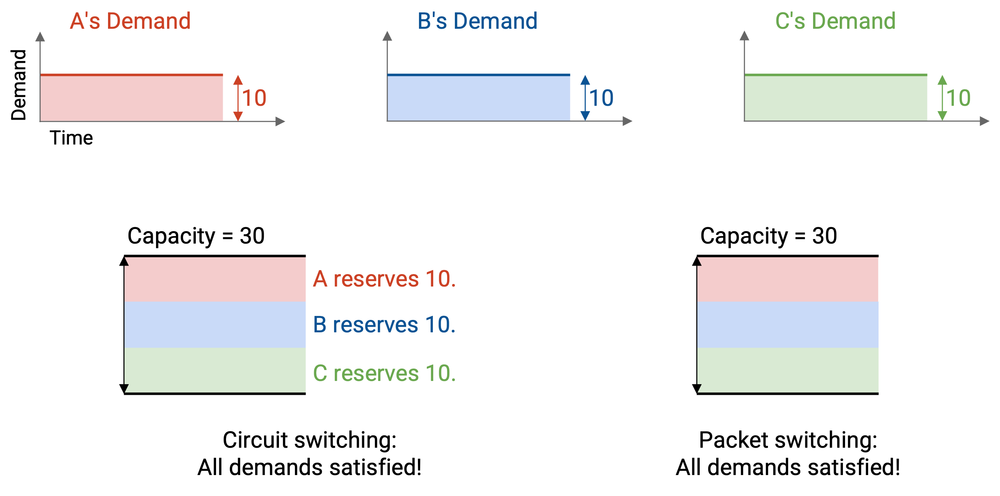
By contrast, if each sender’s rate varies over time, then packet switching gives us a better use of bandwidth.
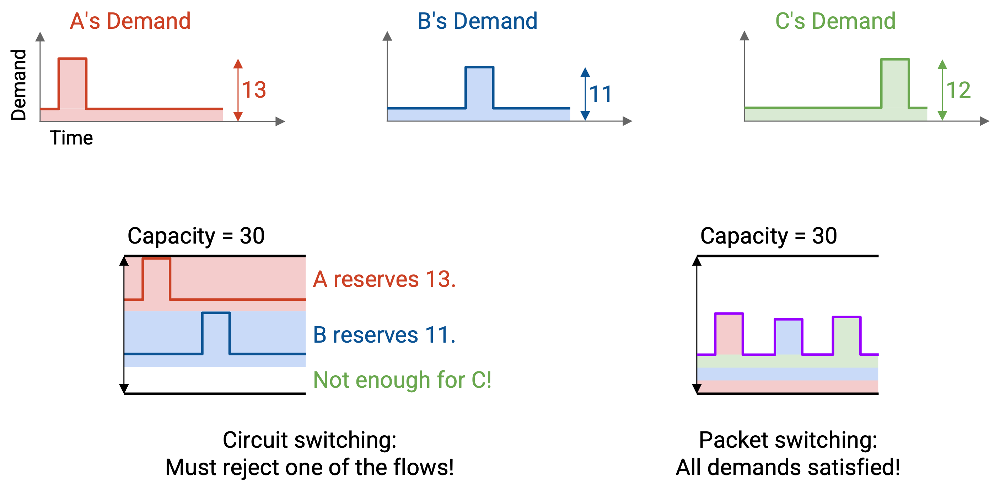
Here’s an example of demand varying over time. With reservations, the three flows must reserve 12, 11, and 13 Mbps. One of the reservations will be rejected, since we can only distribute 30 Mbps.
This approach is wasting bandwidth in two different ways. The flow reserving 12 Mbps is not actually using its bandwidth for most of its time. Also, if the 12 Mbps and 11 Mbps flows get reservations, we have 7 Mbps left over that isn’t being reserved by anybody.
By contrast, in the packet switching approach, where we just send packets as they arrive, the total amount of bandwidth being used at any time never exceeds 30 Mbps. We can support every flow with the bandwidth we have.
Formally, the burstiness of a flow is defined by the ratio between its peak rate and its average rate. There’s no clear threshold for when something is smooth or bursty (they’re more descriptive terms).
Voice calls usually have smoother ratios like 3:1, while web browsing usually has burstier ratios like 100:1. (Voice calls having a smooth ratio is also why the phone network used reservations!)
Another reason why packet switching is more efficient is: Circuit switching spends additional time setting up and tearing down a circuit. This is especially inefficient for very short flows (e.g. downloading a tiny file).
- How well does each approach handle failure at scale?
Packet switching is better at handling failure at scale. If a router fails, we can just send packets along a different path in the network. (We haven’t discussed how yet, but it turns out routing algorithms are good at adjusting to failure.) The end host doesn’t have to do anything different.
By contrast, in circuit switching, if a router along the path fails, the network still has to find a new path, but there’s more for the end host to do. The host has to somehow detect failure, and it has to resend a reservation request. It also has to free up the reservation along the old path somehow. What if the new reservation request is rejected?
This failure mode scales poorly. If a single router goes down, but millions of flows were using that router, then millions of reservation requests have to be simultaneously re-established.
We won’t solve these problems in detail, but hopefully you’re getting a sense that handling failures in circuit switching is a pretty hard problem.
- How complex is it to implement each approach at scale?
If you actually tried to design circuit switching, a lot of additional design questions start to make the protocol really complicated, really quickly.
How do the routers know that the reservation was successful? When 2 sees the request and agrees, how does it know that 3 and 4 also agreed? (Possible approach: We send a confirmation back in the other direction, indicating that the reservation is confirmed.)
What if the reservation request is lost along the way? 1 and 2 agree, but the request packet is dropped before it reaches 3 and 4. (Possible approach: Set a timer, and if the reservation isn’t confirmed in time, delete the reservation. Now the end host has to try again.)
What if the request is sent and everybody agrees, but the confirmation on the way back is dropped? 4 and 3 see the confirmation, but the confirmation packet is dropped before it reaches 2 and 1.
What if the reservation is declined? Should the end host try again and request less? Should the end host wait a bit and try again with the same request? Should the router say in the rejection, “I can’t do 10 Mbps, but I can give you 8 Mbps?”
We won’t solve every design problem, but hopefully you’re noticing that circuit switching is harder to implement than it first seemed.
The fundamental problem that makes circuit switching complicated is state consensus. All the routers have to keep track of extra state, and they all have to agree on what that state is.
You might have heard of the Paxos protocols, which are extremely complicated protocols for getting multiple processors to agree on state. In practice, people to run these algorithms on a group of 4-5 servers. With circuit switching, we’re basically asking the Internet to run that on Internet scale, with millions of routers and flows.
In summary: Circuit switching gives the application better performance with reserved bandwidth. It also gives the developer more predictable behavior.
However, packet switching gives us more efficient sharing of bandwidth, and avoids startup time. It also gives us easier recovery from failure, and is generally simpler to implement (less for routers to think about).
Circuit Switching vs. Packet Switching In Practice
In the modern Internet, packet switching is the default approach.
There are limited cases where circuit switching is used. For example, RSVP (Resource Reservation Protocol) can be used within a small local network, to allow routers (not end hosts) to reserve bandwidth between themselves.
Another use of circuit switching in the modern Internet is dedicated circuits (e.g. MPLS circuits, leased lines). As a company, you can specifically buy some Internet bandwidth (possibly including physical infrastructure) dedicated to your business. This is very expensive compared to a standard Internet connection.
Dedicated circuits are deployed at less ambitious scales than hypothetical full-Internet circuit switching. Someone usually manually sets up the reservation. The reservation is long-lived (e.g. years). The reservation is at the granularity of companies, not individual flows.
Brief history: When the Internet was first designed in the 1970s-1980s as a smaller-scale, government-funded research project, it was packet switched.
In the 1990s, when the government stopped funding the Internet and control passed over to commercial enterprises, research and industry thought we would need to change to circuit switching. The designers predicted that voice and live TV would be the main heavy-duty uses of the Internet. Both of these applications have smooth bandwidth demand, well-suited for circuit switching. Also, because ISPs had to make money off the new commercialized Internet, they thought that circuit switching would offer a more intuitive business model.
There was a lot of work in research and standards bodies to implement circuit switching, but ultimately, this was a failed vision, for many of the reasons we discussed. Also, the main applications driving Internet growth were email and the web, not voice calls and TV, which is another reason why circuit switching vision didn’t work out.
An interesting consequence of these design choices is, users and developers adapted to the realities of packet switching. If you watch a video and the connection is poor, you’re used to the application adapting and the video quality decreasing. (Contrast with broadcast TV, which wouldn’t do this.) This is a lesson in how technology can transform user behavior!